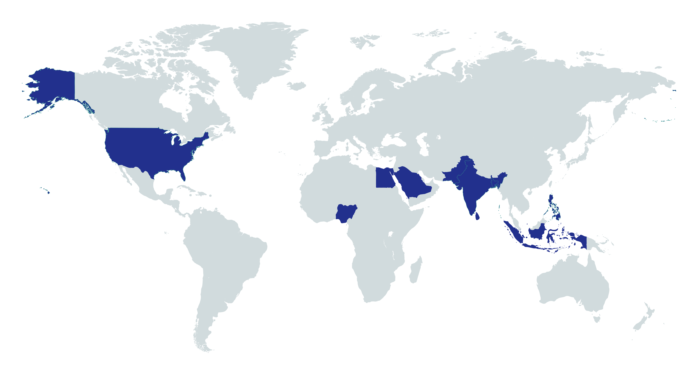
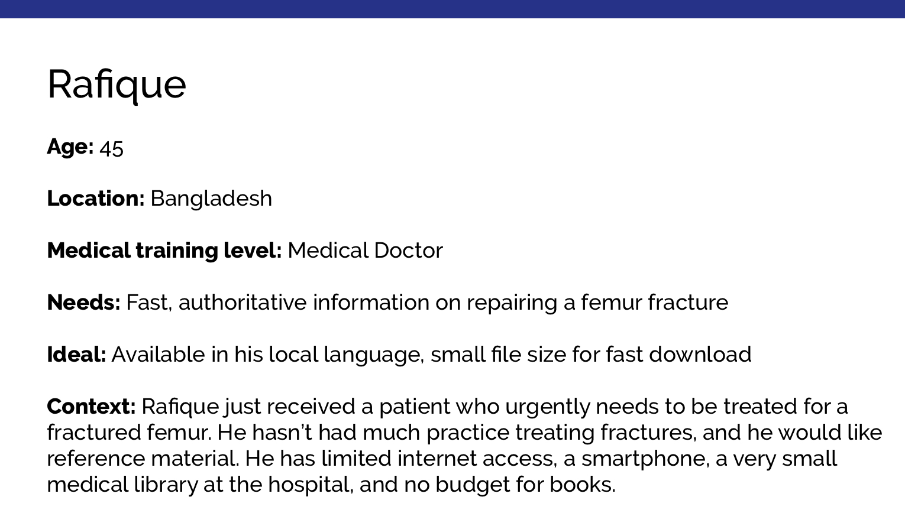
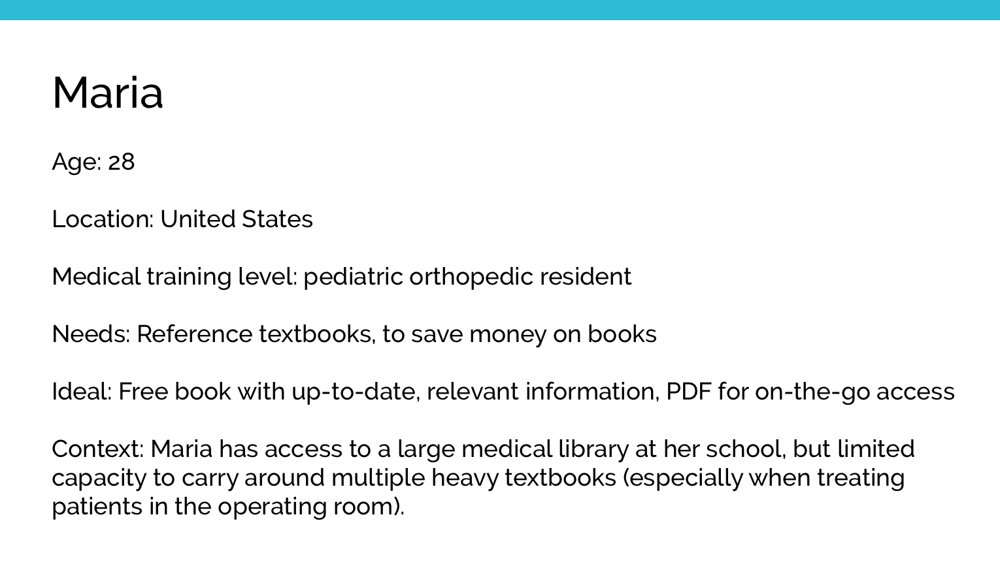
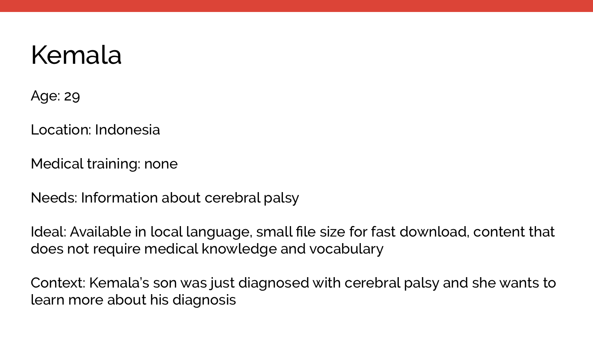
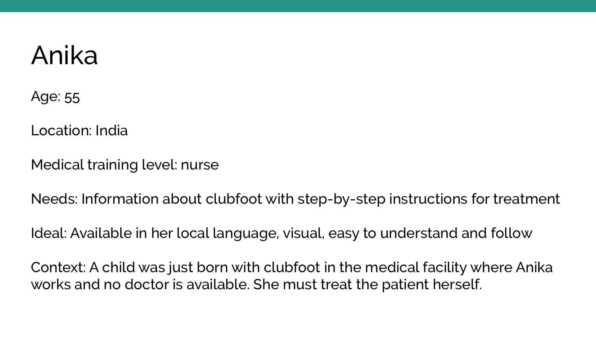
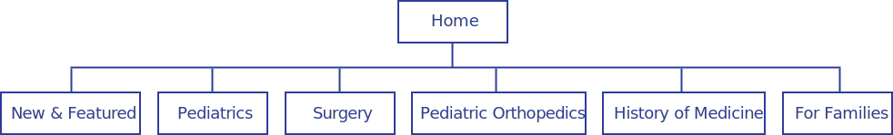

Global HELP needed a new website design that aligned with the organization’s mission, improved navigation of a multi-language library of free downloadable PDFs, and was easy to use on a variety of devices.
Background
Founded in 2002, Global HELP (Health Education Low-cost Publications) is a small, Seattle-based nonprofit with the mission of providing a free medical/healthcare-focused library for medical professionals, patients, and families worldwide. Their website is their primary method of distributing materials, with roughly 10,000 PDFs downloaded from the site each day. The organization has gone through a few website design changes in the past few years, but recently focused on designing for a growing user base and an expanding collection of PDFs and videos.
Team
Brita Ness, UX/UI Designer
Danny Vink, Developer
Dean Carlson, Project Manager
Skills
Personas Affinity diagramming Wireframing User testing High-fidelity mockups High-fidelity prototypes
Tools
Paper and pencil Sketch Illustrator inVision
Reviewing Core Assumptions
As part of the process, our team reviewed some core assumptions that we were making. Here are some of the questions we sought to answer:
Who are our users?
How are users interacting with the site?
How are they getting to the site?
What do they expect to find on the site?
Analyzing Data
To shed some light on our assumptions, we examined data provided by Google Analytics. Here is what we found:
The majority of Global HELP users reside in Southeast Asia, primarily in India.
Roughly 49% of users access materials on mobile, and 49% on desktop or laptop computers. Fewer than 2% use tablets.
Most users find Global HELP materials directly from search engines, and many of those searches return product pages. Only 7% of users begin navigating the site from the homepage.
Many users access Global HELP materials from areas with limited internet access. In some areas, it takes hours to download one PDF.
Identifying our User Base
Because the people who commonly access materials on global-help.org are spread widely across countries, continenets, and cultures, we needed to design for widely-held mental models of how medical information should be organized, classified, and presented. The map below highlights the top ten countries that access Global HELP's materials.

User Research
To develop personas and better understand how people use Global HELP, we examined user testimonials, commonly searched words and phrases in the internal site search, survey results, and frequently-clicked menu items. While it would have been valuable to collect data from in-person interviews with users in Southeast Asia, time, budget, language, and geographic constraints made it not feasible.
Personas
To ensure that our design efforts remained rooted in actual user needs, we created 4 basic personas to represent the needs of our major user groups.




Creating an Information Architecture
After identifying our core user groups, we began thinking about how our menu structure could be optimized to help them find what they need faster and more efficiently. We explored several options, but organizing primarily by medical training level and specialty stood out as the most user-centric way to structure Global HELP's library because possession of medical knowledge can make or break whether a particular resource is relevant or useful to someone.  We also took stock of the current library and developed organizing principles for sub-menu systems within the major categories. The library contains a large amount of information on pediatric orthopedics, and Global HELP had previously built an entirely separate website, Pediatric Orthopedic Academy (POA), to organize pediatric orthopedics-focused PDFs and videos hosted on global-help.org. POA's menu structure had received overwhelmingly positive feedback from users over the years, so we used it as a jumping-off point for organizing Global HELP's section on pediatric orthopedics. Because the other five menu items contained fewer than 30 publications each, we listed them under sub-headings on a single page, rather than breaking them into sub-menu pages because it more closely resembled the organizing principles on POA to which people responded well.
Scoping Challenges
One of the most challening aspects of this project was that, concurrent with the redesign, the Founder and Board of Directors were exploring different ideas for the mission and vision of Global HELP. Discussions about whether the organization should narrow its focus to pediatric orthopedics, keep a broader focus on children's medicine, or attempt to provide information in many different specialties were common during the redesign. Leadership in the organization also underwent a major change with the addition of two new medical directors. The ever-evolving nature of the organization itself required that our website design work well with the current library of materials and accomodate a variety of potential future expansion models.
Sketching and Wireframing
After creating a general information architecture, I created sketches, which I then converted into wireframes to help the team begin to visualize how it might be translated into design.